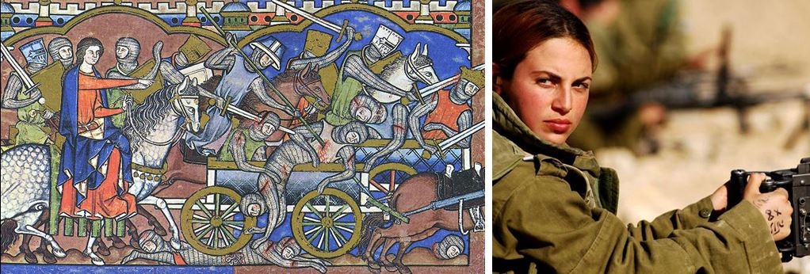
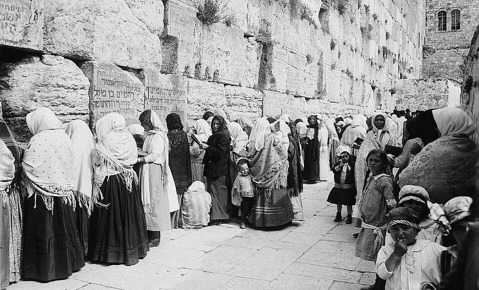
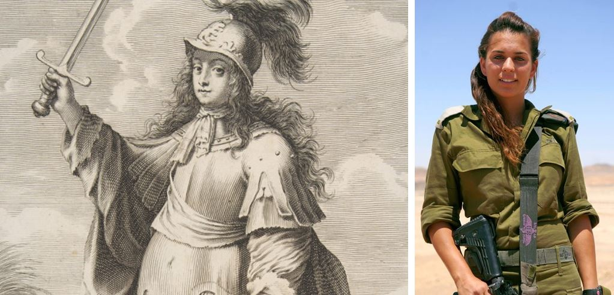
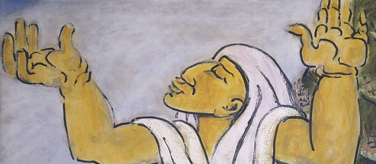

May a Woman Blow the Shofar?
Every now and then, here and there, the question comes up: may a woman… blow the shofar? Whether she is able to do it is not the question (in my opinion women can do it better than many of us…).
May a woman blow the shofar?
23 And the LORD spoke unto Moshe, saying:
24 Speak unto the children of Israel, saying: In the seventh month, in the first day of the month, shall be a solemn rest unto you, a memorial proclaimed with the blast of horns, a holy convocation.
Lev. 23:24
וַיְדַבֵּר יְהוָה אֶל־מֹשֶׁה לֵּאמֹר׃
דַּבֵּר אֶל־בְּנֵי יִשְׂרָאֵל לֵאמֹר בַּחֹדֶשׁ הַשְּׁבִיעִי בְּאֶחָד לַחֹדֶשׁ
יִהְיֶה לָכֶם שַׁבָּתוֹן זִכְרוֹן תְּרוּעָה מִקְרָא־קֹדֶשׁ׃
VA-YEDABER ADONAI EL-MOSHE LEMOR
DABER EL-BNEI YISRAEL LEMOR BA-HODESH HA-SHVI'I BE-EHAD LA-HODESH
YIHYE LAKHEM SHABATON ZIKHRON TERUAH MIKRA KODESH

Every now and then, here and there, the question comes up: may a woman… blow the shofar? Whether she is able to do it is not the question (in my opinion women can do it better than many of us; you can see for yourself in this astonishing video).
Nor is it in question that she already does it, and not only in private or indoors, but out in the open and even on the roofs of houses. Notice that in shofar flash mobs (imagine, there are such things) most of the participants are women.
Sometimes it seems to me that a woman can do much more than a man. So there is no doubt at all about a woman's ability to blow. In this matter women are also often more active than men.
I read somewhere that the Talmud (tractate Rosh Hashanah) hears in the sounds of the shofar the alarm of a man and the weeping of a woman. Does this mean that men and women hear the shofar differently?
Scientists say that men listen (take in information) with one hemisphere of the brain and women with two. Does it follow that we hear the shofar differently?
Still, there are rabbis who insist that both men and women listen to the shofar and hear it according to how ready they are to receive it. There is no gender difference in perceiving the sounds of the shofar. What matters is to hear the sounds, to take in the depth of the tradition, to understand the meaning of the Feast of Blowing the Shofar (Rosh Hashanah), to grasp the power of repentance.
But those two hemispheres still give me no peace…
A woman SHOFYOR (in Russian, a driver) is perfectly normal (except in Iran, it seems).
But a woman and the SHOFAR, that is a problem…
The Torah gives no clear prohibition against a woman taking up this object. To be honest, I do not know how to answer this question. Do not expect an answer from me.
I do not know all the details of halakhah on this. I only know for sure that at the Kotel (the Western Wall), if you are a woman, you will not be allowed to read the Torah scrolls aloud, put on tefillin, wear a tallit or blow the shofar. At home, please do!

In the past I would have answered this question quickly and definitely: she may not, in the sense that she had better not.
Today I find it hard to give a definite answer.
First of all, it was a woman who taught me to draw sounds out of this instrument. And she did it wonderfully, without even having a shofar with her, just with her hands. She folded her hand in a certain way, imitating a shofar, and showed me how to control my lips and produce the sound, suggesting a simple exercise. I must admit that this remarkable woman does not blow the shofar in public herself. She believes this responsibility rests first of all on men. But if she has the chance to help such a man get the basics of the instrument, she is ready to do it.
The very fact that women (more in the USA, it seems to me) have taken up the shofar does not yet prove that this is right; it only states a fact that is plain to see.
I do not mean the various feminist movements in their struggle for all sorts of freedoms, including, for example, walking the streets naked, or at least topless. Feminists see prohibitions of this kind as medieval obscurantism. So let us leave the feminists, with all their progressiveness, in peace. They are not what we are talking about.
There were women warriors in Jewish history, Devorah for example. True, she herself understood how awkward such a position was.

Some denominations have women pastors. The Orthodox Church explains simply why a woman cannot be a priest in the church: the priest is an image of the Saviour, and He was a man.
In my view it is not so simple. The Bible shows us a prototype of the Messiah, the Deliverer, among others in the person of a Jewish woman named Hadassah (Queen Esther). All things are possible with God.
Israel is the only country in the world where women come under the law of universal military service. What is more, in the Israeli army there are certain military specialities where women turn out to be more effective and better suited to do what is hard for a man.
In the war "Tzuk Eitan" (Operation Protective Edge), which has only just ended, a young woman commanded a crew of the legendary "Kipat Barzel" (Iron Dome) and received an award for her successful defence of the civilian population.
One of the best Bible teachers I have heard in person is a woman.
And then, if there is no suitable man, a situation arises when someone, even a woman, has to take up the gauntlet. If the commandment of the LORD says, "Blow the shofar in Zion", and the man lying (or rather standing) nearby does not want to blow, or out of his shofar comes a barely audible, excuse me, farting sound, then pigs do fly and the woman takes the responsibility on herself.
Once I gave a seminar for a group of believers from the United States. Most of the group were ladies, and not young ones. The question we are discussing today came up. Before I could open my mouth, testimonies came pouring out. Here is one of them:
"Because of her work, one of the ladies regularly visited a certain district of Los Angeles. The district was notorious for a high rate of crime, drug addiction and so on (well above average). And one day, as she told it, she received a revelation: to go up onto the roof of one of the tall buildings, from which the whole district could be seen as on the palm of your hand. No sooner said than done. She began going up onto the roof regularly, and not empty-handed but with a shofar. And what do you think she did with it there? Right: she lifted up her voice in prayer from the roof, and then blew the shofar with all her might.
A month later she learned that drug addiction and the crime connected with it had dropped considerably in the district. Naturally this encouraged her, and she made God a promise (there were no witnesses) and took on the responsibility of going up onto the roof of that building regularly and bringing down on the district the voice of a big shofar (experience shows that women prefer big Yemenite shofars, which few men can manage). The results were simply amazing.
In time it all somehow lost its edge: business, worries. In short, she gradually stopped going up onto the roof. And quite soon the crime came back…
Then there were negotiations with the Most High again; she confessed she had broken her promise and resumed her duty of blowing."
When she finished her testimony, supported by the sisters' exclamations that it really had been so (the sharp drop in crime, that is), she asked me what I thought: may a woman blow the shofar?
I was a little taken aback, and my answer was without guile: "If the Most High has spoken to you, and if you are sure of His support and have seen the words you heard confirmed, who am I to speak against God?"

P.S.: some brothers, trying to shift the responsibility onto the sisters, start from the principle "there is neither male nor female in Christ". The conclusion is up to each of us…
Author: Ephraim Kalish / Torah-Art
What do you think? How do you relate to this commandment, to BLOW?